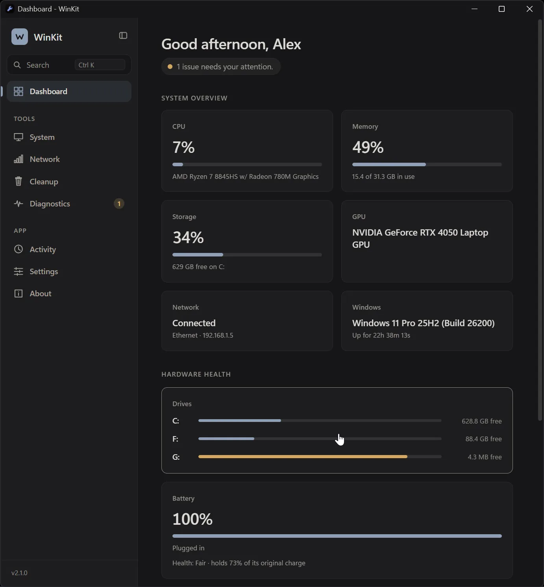
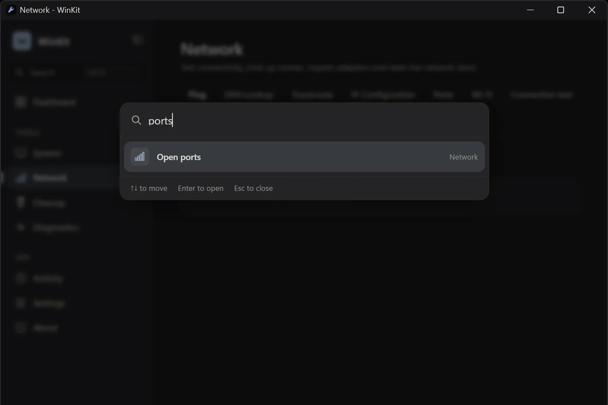
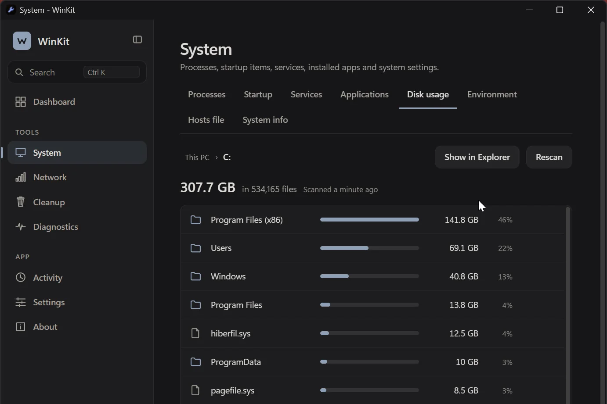
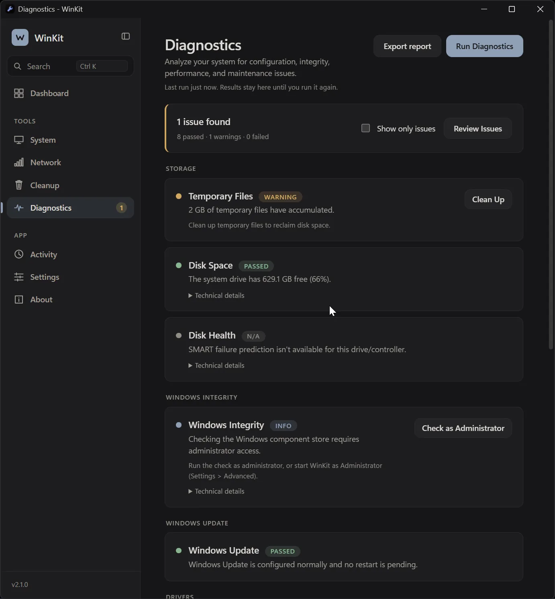
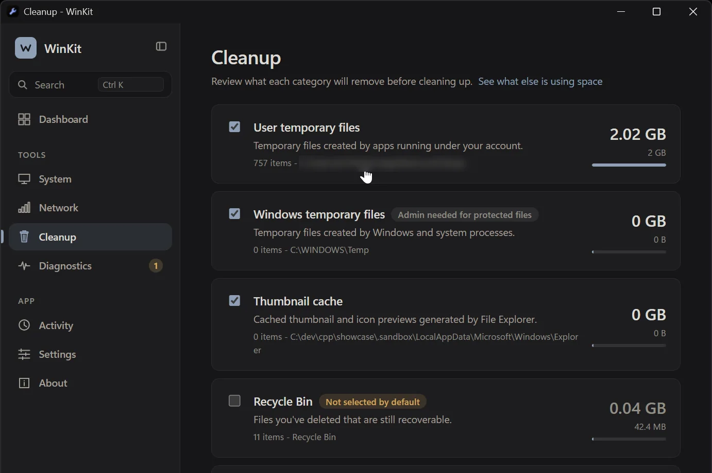
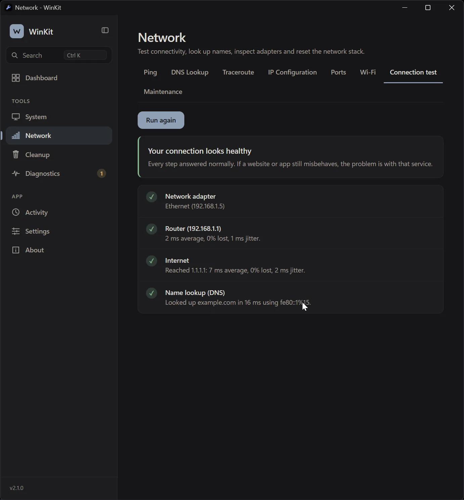
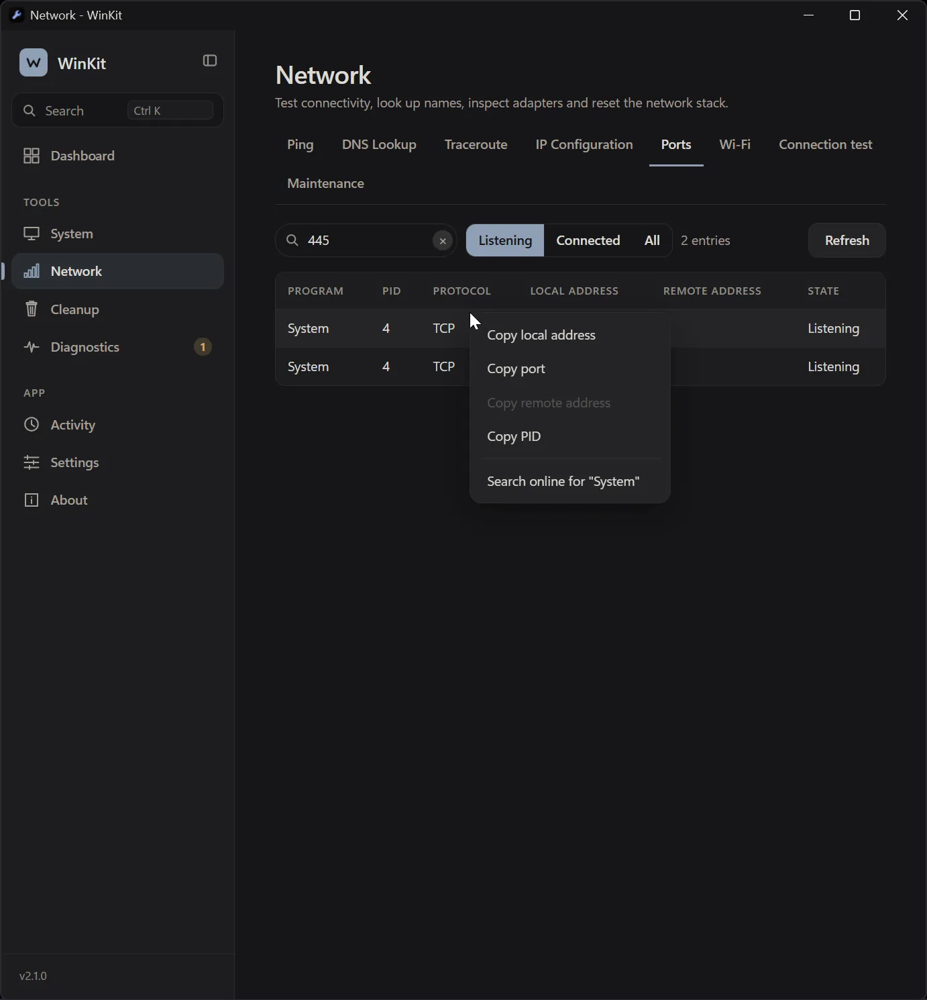
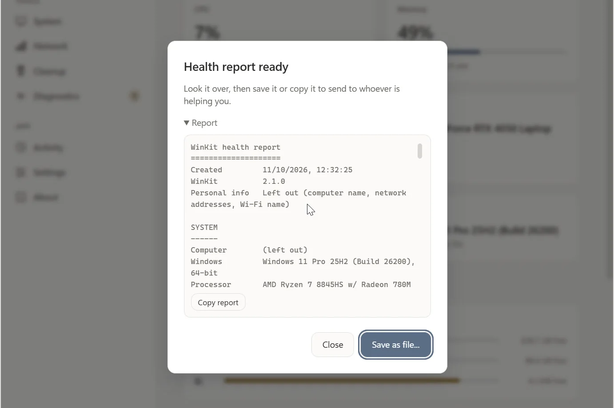
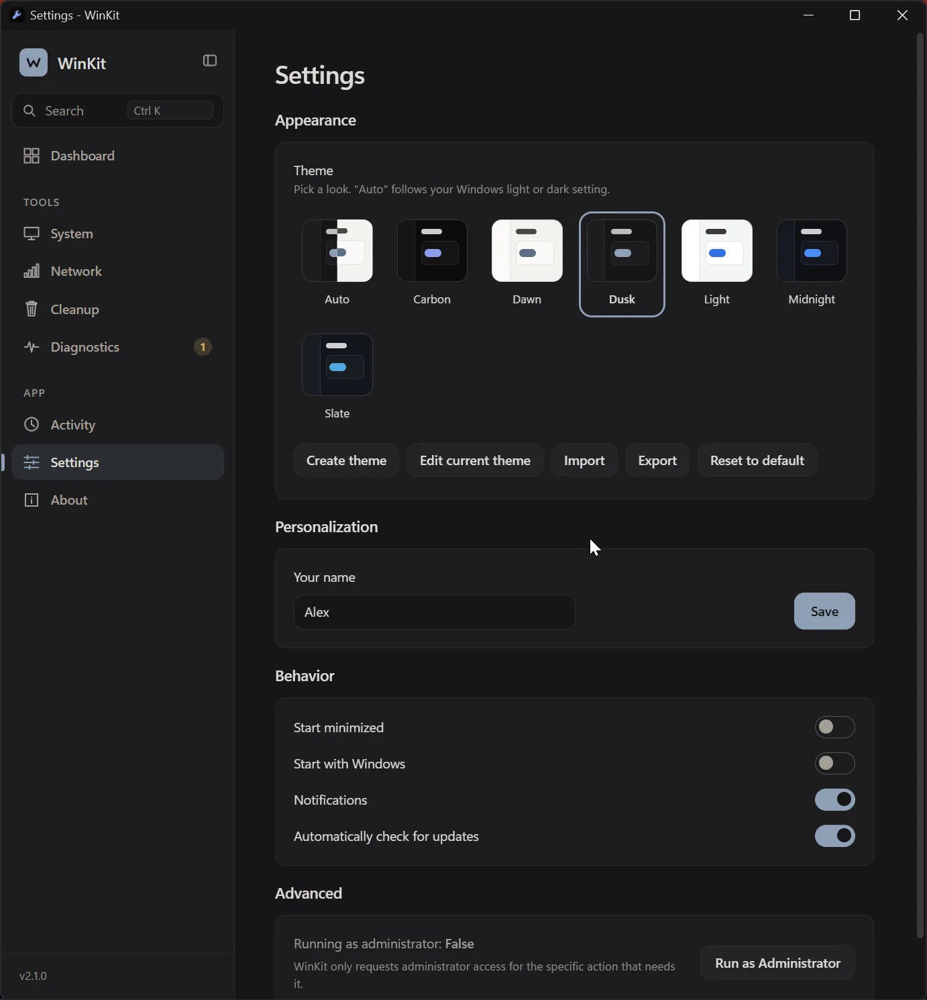

Disk usage
Pick a drive and click through the biggest folders and files to see where your space went. It only reads. It never deletes.
Windows administration, without the clutter.
A free, open-source toolkit for Windows 10 and 11 that shows what your PC is doing, finds what is wrong and helps you fix it: diagnostics, disk usage, cleanup, Wi-Fi and network tools, in one portable file under 1 MB.
Every action WinKit takes is a real, explainable operation. No fake optimizations, no invented performance claims.
New in 2.1.0
Pick a drive and click through the biggest folders and files to see where your space went. It only reads. It never deletes.
Signal, channel, speed and security, plus a one-click test that says whether the problem is your PC, your router, your provider or DNS.
Save a plain-text summary of your PC to send to whoever is helping you. Names and addresses stay out unless you tick a box.
Free space for every drive and, on laptops, battery charge and how much of its original capacity is left.
Every open port and connection with the program that owns it. See what is using port 3000 or talking to the internet.
Copy, show in folder, search online and end process, right where you need them. Click an address or value to copy it.
Tour
Real screenshots of WinKit 2.1.0 on Windows 11.

Live CPU and memory, storage, GPU, network and Windows build, plus hardware health: free space on every drive and, on laptops, how much of the battery’s original capacity is left.

Jump to any page, tab or action with a few letters. Here “ports” finds the open ports list, and Enter opens it.

Pick a drive and see every folder and file sorted biggest first, with its size and share of the drive. Click a folder to look inside. It only reads, it never deletes.

Storage, Windows integrity and updates, drivers, startup, services and network, each with a short explanation and a fix where one exists. On this PC: one warning, 2 GB of temporary files.

Each category shows its size, item count and location. The Recycle Bin is not selected unless you choose it, and nothing is removed until you confirm the total.

Checks each step between your PC and the internet: network adapter, router, internet and name lookup, with timings, then says where the problem is.

Every open port and connection with the program and PID that owns it. Right-click to copy an address or search the program online.

One plain-text report of your PC for whoever is helping you. Computer name, network addresses and Wi-Fi names are left out unless you tick a box.

Wi-Fi details show signal, band, channel, speed and security, with plain advice when the signal is weak or the channel is crowded.

Dusk, Dawn, Midnight, Carbon, Slate and Light, or Auto to follow Windows. Edit a theme, or import and export your own.
Features
CPU, memory, GPU, storage, network, Windows build and uptime in one place, with meters that change colour as they fill. Instead of Settings, Task Manager and winver.
Eleven checks across connectivity, drivers, disk health, services and Windows Update, reported in plain language rather than error codes, with a one-click fix wherever one exists.
A live process list with real memory and CPU for every process, sorted by memory like Task Manager, plus services and startup items in the same window.
See what is taking your space, drive by drive and folder by folder. Junctions and cloud-only files are not counted twice, and the scan can be cancelled any time.
Ping, traceroute, DNS lookup, IP configuration, open ports, Wi-Fi details and a connection test, next to maintenance actions like flushing DNS and resetting adapters.
Scan temporary files, the thumbnail and Windows Update caches and the Recycle Bin, see what each category holds, and reclaim only the space you choose to.
Installed applications with clean uninstall, an environment variables editor and a hosts file editor, elevated only when a task needs it.
One plain-text summary of your PC for a friend, a forum or a support desk. Computer name, addresses and Wi-Fi names are left out unless you include them.
Quick Open jumps to any page or action. Every list is searchable, values copy with a click, and the window reopens exactly where you left it.
Principles
The whole app is one executable under 1 MB. It idles at almost no CPU, and stops polling entirely while minimised.
Settings and history stay on your machine under %LOCALAPPDATA%\WinKit. No account, no cloud sync, no telemetry. Crash reports are only sent if you press Send.
Every action is a real, explainable operation. Anything destructive asks first, and WinKit never follows a link or junction out of the folder it was asked to clean.
Keyboard
Made with
C++·Windows API·WebView2·HTML / CSS / JS
FAQ
WinKit is not code-signed yet, so Windows SmartScreen may show an "unknown publisher" notice the first time you run it. The source code is public on GitHub, and every download has a SHA-256 checksum you can verify below.
No. It starts as a normal app. A few actions, such as resetting the network stack or editing the hosts file, ask Windows for approval when you use them. Checks that need those rights say so instead of guessing.
Nothing on its own, apart from an optional check for new versions against GitHub Releases, which you can turn off. There is no account and no telemetry.
The portable file runs from anywhere and leaves nothing behind. The installer adds a Start Menu shortcut and an uninstaller, and both update themselves from GitHub Releases after a checksum check.
WinKit's interface uses the Microsoft Edge WebView2 Runtime, which Windows 11 and current Windows 10 already include. If yours is missing, WinKit offers the official download link.
Settings, themes and history live in %LOCALAPPDATA%\WinKit. Delete that folder to remove everything. The installer's uninstaller also removes the start-with-Windows entry.
It covers a lot of the same ground in a calmer window, and adds disk usage, Wi-Fi, diagnostics and a health report. It does not try to be a performance profiler.
Download
One small file. Download and run it. Nothing is installed, nothing is registered.
Download .exe0.83 MB · or as .zip
Installs to Program Files with a Start Menu shortcut, an uninstaller and in-app updates.
Download .exe2.4 MB
Check a download in PowerShell with Get-FileHash .\WinKit-2.1.0-portable.exe and compare it with the matching line below.
dc7556eaf011f5ae21077e9b7baa79f648977956d10eff28c1319d096a380664 WinKit-2.1.0-portable.exe 992f0cc654523eb7e0bb00f880fd2cd42e9b94bbc6af6626416dab3e809511d6 WinKit-2.1.0-portable.zip ff6c639e0f85cfd15d476b01a353abe0d4d509fc92b2a3b7bb2baf5b3d60ff0e WinKitSetup-2.1.0.exe
Code signing policy
Free code signing provided by SignPath.io, certificate by SignPath Foundation.
Status: WinKit is applying to the SignPath Foundation program. Until signing is in place, releases are unsigned and Windows SmartScreen may show an "unknown publisher" notice. Every download has a SHA-256 checksum you can verify.
Privacy policy
WinKit has no account, no analytics and no telemetry. Settings, themes and activity history stay on your PC in %LOCALAPPDATA%\WinKit. The program does not transfer information to other systems unless you ask it to. The only network use is:
The health report is saved or copied only when you ask, and leaves out your computer name, network addresses and Wi-Fi names unless you tick a box.